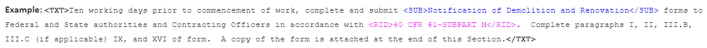

Extensible Markup Language (XML) is an international standard that provides a mechanism for defining and tagging elements of information within Section (.sec) files. XML applications provide the necessary structure for exchanging information among various hardware platforms and software packages. SpecsIntact uses this tagging scheme to define descriptive markup to separate and identify the logical elements of the specifications. Angle brackets are used as tag delimiters, a keyword, and optional attribute information. Most tags have a beginning tag and an ending tag.
Tagging Structure Char
Key elements of a Section are annotated with the SpecsIntact XML tagging scheme, which uses beginning and ending tags. The structure is illustrated below:

Tagging Basics
In the first line of every SpecsIntact file, there are XML tags that point to the XML schema that tells the system to follow the rules of the Section document type for either a SpecsIntact Document (Division 00) or Section (Division 01 - 49) file. Therefore, every file will follow the same rules.
For example, when you change a tag's characteristic (margin, font, etc.) in one file, you have changed it for every file, which then updates the Document.ini or Section.ini files.
Each tag has its structure. Some tags can appear anywhere in the file but most tags can only appear embedded in others. For instance, a Subpart (SPT) tag can only exist within a PART (PRT). The rules that pertain to a tag can be found in the 'Rules' Section of the Initialization (.ini) file. It is a good practice to Validate the Section (.sec) file when you save; an invalidated Section will work unpredictably in the SpecsIntact application.
 To learn more about how tags are embedded, refer to the SpecsIntact Section Format topic.
To learn more about how tags are embedded, refer to the SpecsIntact Section Format topic.
Inserting tags
The SI Editor provides several ways to insert tags by selecting the Insert menu > Tags, clicking the appropriate tag on the Tagsbar, or by using the keyboard shortcut F4.
When adding text you want to tag, you can type the text first and place the appropriate tags around the newly typed text, or you can insert the tags first and type the text between the new tags.
To correctly enter new information that requires multiple tags, always begin from the outside and work your way in. In the example below, start by adding the Text (TXT) tag, followed by the Submittal (SUB) tag, and lastly the Reference Identifier (RID) tag. Inserting the TXT tags first will ensure that the SUB and RID tags can be added without error.

 When using the Tagsbar to insert a Reference (REF), Reference Identifier (RID), Submittal (SUB), or Section Reference (SRF) this action launches the Reference Wizard, Submittal Wizard, or the Section Reference Wizard.
When using the Tagsbar to insert a Reference (REF), Reference Identifier (RID), Submittal (SUB), or Section Reference (SRF) this action launches the Reference Wizard, Submittal Wizard, or the Section Reference Wizard.
Removing Tags
When editing with Revisions, you have several ways to remove tags, making it easy to clean up and refine your Section efficiently.
To remove tags with Revisions, place your cursor between the tags you want removed, and perform one of the following:
- To remove tags with Revisions, place your cursor between the tags and perform one of the following:
- Right-click and select Remove Tags
- Select the Edit menu and select Remove Tags
- Use the keyboard shortcut Ctrl+M